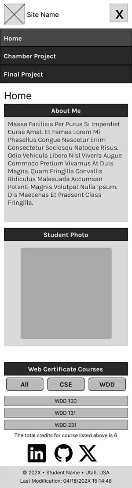
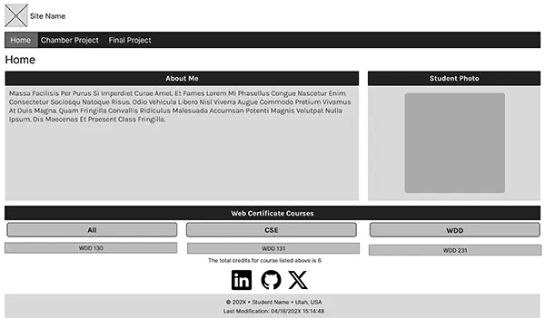

Site Name
Green Thumbs Lawn Care
Green Thumbs Lawn Care is a professional landscaping and lawn maintenance company dedicated to helping homeowners and businesses maintain healthy, beautiful outdoor spaces throughout the year. The name reflects the company's commitment to expert lawn care and creating vibrant landscapes.
Optional Domain: greenthumbslawncare.com
Site Purpose
The Green Thumbs website will provide information about lawn care, landscaping, seasonal maintenance, and irrigation services. Visitors will be able to browse available services, view completed projects, request a free estimate, and contact the company for scheduling.
Scenarios
- What lawn care services are available for my property?
- How can I request a free quote for landscaping or weekly lawn maintenance?
Color Scheme
- Forest Green (#2E7D32) – Header, navigation, buttons, and accents.
- Light Green (#A5D6A7) – Section backgrounds and highlights.
- White (#FFFFFF) – Main page background and content areas.
Typography
- Oswald – Headings and navigation.
- Roboto – Body text and paragraphs.
Wireframe
The following images represent the planned layout for both the mobile and desktop versions of the Green Thumbs home page.
Mobile View

Desktop View
